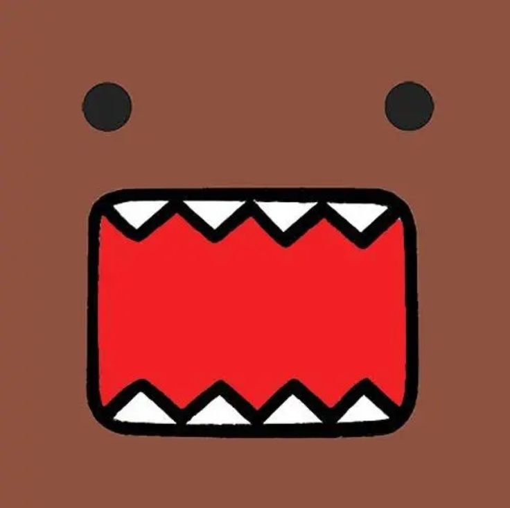

Portafolio de Actividades
Proyecto de Ingenieria
Departamento de Ciencias e Ingenierías | Universidad Iberoamericana Puebla, México.
PRACTICA 8. FIBRA DE VIDRIO

- Introducción -
La malla de fibra de vidrio son hebras muy finas de vidrio tejidas en distintas configuraciones o formas diferentes para formar una tela o malla. Se adquiere así un material flexible, muy resistente al calor, ligero, resistente a muchos productos químicos, buen aislante eléctrico y barato. Por ello se usa para reforzar y/o revestir superficies.
Para esta practica utilizamos este material entre otros para crear una estructura resistente que nos permite mantener la estructura del molde de impresión 3d que ocuparemos.
Objetivo
Crear un modelo de fibra de vidrio en 3d basado en un molde que ocupemos con el fin de aprender a utilizar este material.
- Materiales -
- Modelo (en este caso de impresión 3d)
- Gel coat
- Catalizador
- Resina de poliester
- Malla de fibra de vidrio
- Brochas desechables
- Guantes de latex
- Cubrebocas
- Bata o overol
- Desarrollo -
Para comenzar la practica imprimimos un modelo en impresora 3d (En este caso un modelo de una cabeza de mazinger z sacado de thingiverse)
Cuando tengamos el modelo bajamos al área de prácticas para empezar con el proyecto, nos preparamos con el overol o bata, cubrebocas y guantes de látex ya que el contacto con fibra de vidrio puede causar irritación en la piel, los ojos, y las vías respiratorias, entre otros efectos.
Para empezar, preparamos en un vaso de papel una mezcla de gel code con catalizador en relación de 20 gotas de catalizador a 100 gramos, este nos sirve de para dar un acabado al recubrimiento.
El gel coat es una resina modificada que se aplica en el vaciado de moldes en estado líquido, que al secarse forman una estructura más profesional o lisa, posteriormente estos se cubren con resina y fibra de vidrio para darle dureza.
Una vez preparada la mezcla la comenzamos a aplicar sobre el molde con una brocha rápidamente, ya que esta al ser una resina se seca rápidamente impidiendo su uso posterior.l
Cortamos trozos del tamaño y formas que consideremos adecuados para usar como base y las adherimos a la pieza aplicando la segunda resina con una brocha diferente y su mezcla con su catalizador correspondiente, una vez terminado este proceso se deja secar de 15 a 20 minutos hasta que quede solido
- Conclusiones -
Lo más complejo de la practica con resina es medir tus tiempos para realizar la cubierta con las resinas, ya que estas se comienzan a endurecer rápidamente, en nuestro caso, inutilizando la brocha con la cual estábamos aplicando esta, mientras que, con la malla, al ser la primera vez que trabajamos con el material nos costo mantener la forma al momento de pegarla.
Otro punto importante que destacar de la práctica es mantener las precauciones adecuadas al trabajar con este material, ya que como mencione anteriormente podría provocar comezón e incluso irritación al entrar contacto con la piel.